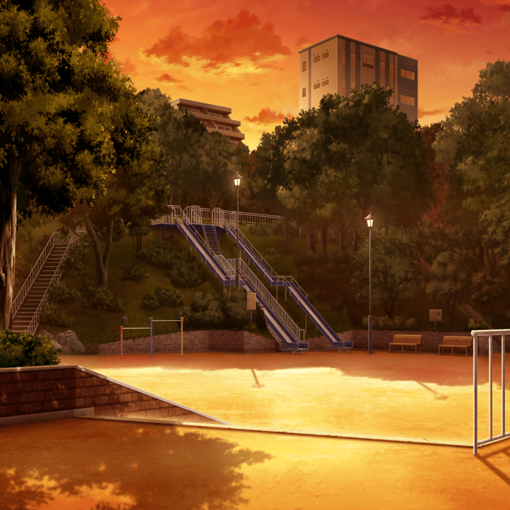

市ヶ谷家 蔵
香澄
おっはよー、みんな！
たえ
香澄、声出るようになったの？
りみ
もう平気？
香澄
えへへ、ご心配おかけしました！
有咲
ホントだよ
沙綾
じゃあ今日から練習再開だね
たえ
オーナーにオーディション受けるって連絡しとく
香澄
う、うん……
有咲
時間ねーし、集中してやらないとなー
沙綾
じゃあ早速始めよっか
香澄
…………
沙綾
やっぱ今日やめとく……？
なんかまだ顔色悪そうだし……
香澄
ううん、大丈夫！ 早く練習しよ！
沙綾
じゃあ最初から合わせよっか
沙綾
ワン、ツー、スリー、フォー
香澄
た……と……え……
沙綾・りみ・有咲・たえ
…………！
香澄
た……と…………
香澄
……ごめん。まだだった……
沙綾
香澄……
香澄
えへへ、みんなは練習してて
有咲
練習しててって……どこに行くんだよ？
たえ
待って、香澄
りみ
香澄ちゃん……！

公園
香澄
はぁ、はぁ、はぁ……
たえ・りみ
香澄！
香澄ちゃん！
有咲
ひい、はあ、香澄ぃ……
香澄
なんで付いて来るの……！
有咲
お前がどっか行こうとするからだろ！
つーか、全然大丈夫じゃねーじゃん！
香澄
家では大丈夫だったんだよ。
ちゃんと声出たのに……
香澄
一番できてないし、歌えないし、
いっぱい練習しなくちゃいけないのに……
りみ
香澄ちゃん……
香澄
次が最後なんだよ。
なくなっちゃうんだよ
香澄
受かんなかったら……
立てなくなっちゃうんだよ。
なのに……
有咲
泣くなよ……
有咲
言っとくけど、
香澄が一番できないのなんて最初からわかってるし
有咲
そんなの気にしないで突っ走ってたじゃん。
何今更気にしてんの？
沙綾
誰かに何か言われた？
香澄
オーナーに、あんたは周りと自分が見えてないって……
有咲
……それはそうだな
有咲
やるって決めたらこっちの言い分聞かずに突っ走って、
巻き込まれてケガすんのもこっち
香澄
うう……
有咲
でも、悪くなかった。
迷惑っちゃ迷惑だけど、香澄に引っ張りこまれたから、
またがんばってみようかなって思えたし
香澄
有咲……
たえ
最初、香澄がSPACEのオーディション受けるって言った時、
びっくりしたな。きらきら星単音で弾くのがやっとだったのに
たえ
でもあの時、香澄『わかんないけどがんばる！』って
有咲
わかんねーのか
たえ
……まぶしかった。
言い切っちゃう香澄、いいなって思った
たえ
ステージに立つの、私にはまだ早いと思ってたけど……
一緒にがんばってみようかなって思ったの
りみ
私も香澄ちゃんが何も持たないで
ステージに出て行っちゃった時、まぶしかった！
りみ
すごいなぁって……だから踏み出せたんだよ。
私も香澄ちゃんみたいにキラキラドキドキしたいなぁって
香澄
私……みたいに？
沙綾
何か追っかけてる香澄、すごい輝いてるんだよ。
それが香澄の目指してるキラキラかどうかはわかんないけど
沙綾
そんな香澄を見てて、ずっと羨ましかったんだ。
私はずっと立ち止まったままだったから
沙綾
でもね、香澄が引っ張りあげてくれた。
有咲とりみりんとおたえと一緒に……バンドやろうって！
香澄
うー、だって一緒にバンドやりたかったから……！
有咲
それでいいじゃん。
下手だとか受からないとか余計なこと考えんな
沙綾
香澄、前に言ってくれたよね？
ひとりで悩まないで一緒に考えようって。一緒に考えさせてよ
香澄
さーや……
りみ
オーナーの言う、自分が見えてないって、
たぶん自分のレベルがわかってないってことだと思うんだ
たえ
自分に何が足りてないのかわからなかったら、
どうがんばったらいいかわからないもんね
沙綾
香澄はもう自分に足りないものわかったんじゃない？
香澄
うん……
いっぱい足りないところある……
有咲
あー……いっこ提案なんだけど
沙綾
あ、それなら私もある
有咲
ん、じゃあ、先どーぞ
沙綾
えっ……いいよ、有咲から……
たえ
歌、みんなで分担しようよ
有咲
あー！ おま、言おうとしたのに！
沙綾
あはは、私もそれ言おうとしてた
りみ
サビとかコーラスだけじゃなくってってこと？
沙綾
うん、歌ってみようよ
たえ
歌詞のメモ持ってるから、パート決めよっか。
私は……ここ歌うね
有咲
早い者勝ちかよ！ てか、今歌うのかよ！
沙綾
じゃあ、私はその後がいいな
りみ
ま、待って〜
たえ
じゃあ、りみから
りみ
好きで好きでたまらないよ
今すぐ扉あけたいよ
でも踏みだせないのはなぜ……
たえ
だけど三つのコードから
キミと一つになれたよね
もう夢はみんなのもの、この心ふるわせたい
沙綾
星に願いをかけてはしゃいだ
あの夜空は続いていく
有咲
正直になれそうな自分に
キミが微笑んだ
香澄
そうだ。どんなに今がつらくたって
何もうまくいかなくたって
積み重ねたもの忘れない『前へススメ！』
香澄
全身全霊ただ前進！
一心不乱に精一杯！
果てしなくても遠くても！
全員
見渡す限りに揺れる輝きが
全員
待っている場所を
夢見ている、夢見ている
有咲・沙綾
……………
りみ・たえ
……………
香澄
……私、わかった気がする。
オーナーの周りが見えてないって言葉の意味……
香澄
私、ずっとひとりでがんばろうとしてた。
自分ががんばらなくちゃって、みんなのこと見れてなかった
有咲
気づくの遅いっつーの
沙綾
誰かの足りないところは誰かが埋めればいいよ
たえ
演奏の責任はひとり一人にあるけど、ポピパは５人でポピパ
りみ
バンドってきっとそういうものだよ、香澄ちゃん
香澄
みんな……
うう、ありがとう……
有咲
だから、泣くなってば！
香澄
だって、嬉しくて〜……
みんな、オーディションがんばろうねっ！